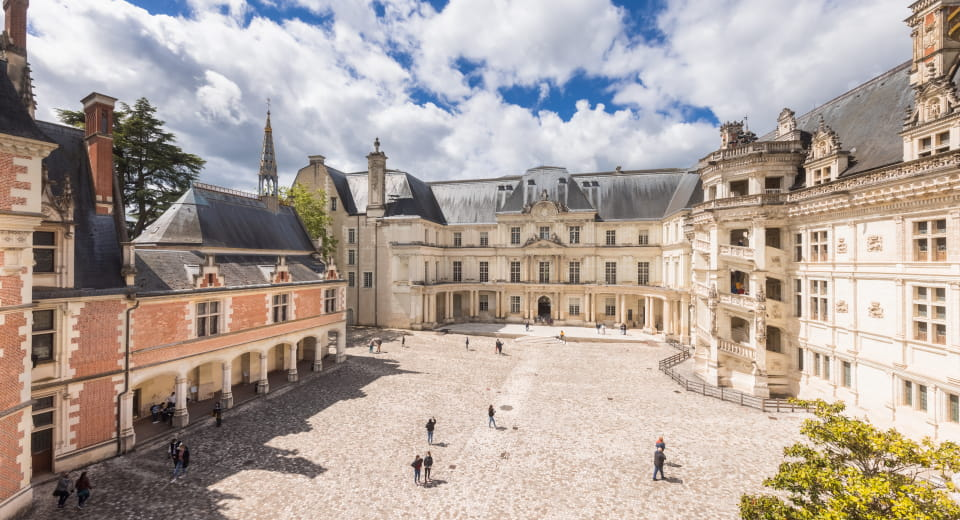
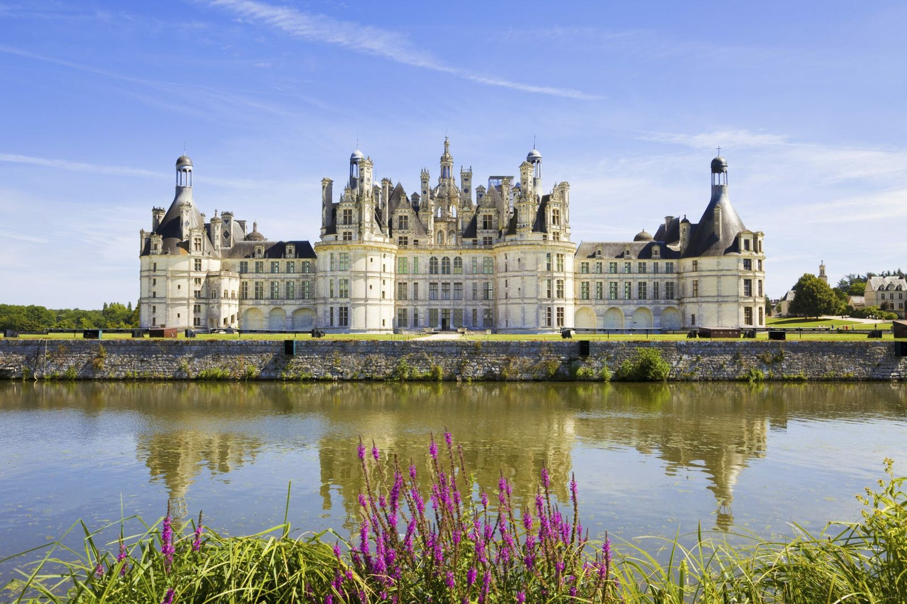
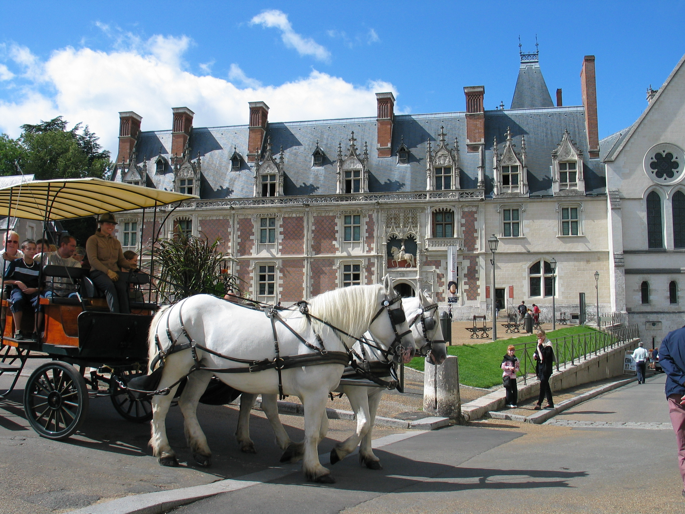

ENTRE BLOIS ET CHAMBORD
Du samedi 23 au dimanche 24 août 2014
| Durée | 2 jours |
|---|---|
| Prix | 249 € |
| Dates | Du samedi 23 au dimanche 24 août 2014 |
| Région | Centre-Val de Loire, France |
Samedi : Votre région → Blois
Départ de votre région à bord de notre autocar grand tourisme en direction de Blois. Déjeuner au restaurant. L’après-midi, rendez-vous avec votre guide pour la visite de Blois en attelage et à pied : départ en attelage de la Place du Château vers l’Église Saint-Nicolas, les quais de la Loire et le Pont Gabriel. Puis poursuite de la visite pédestre dans le quartier de la cathédrale à travers les rues pittoresques du Puits Châtel, abritant de très beaux hôtels particuliers. Installation à l’hôtel, dans les environs de Blois, dîner et logement.
Dimanche : Château de Chambord
Petit déjeuner à l’hôtel et départ pour une visite guidée du Château de Chambord. Chef-d’œuvre de la Renaissance française, ce château expose toute la démesure et les ambitions du Roi François Ier. Vous assisterez ensuite à un spectacle équestre « Dans la forêt de l’histoire ». Puis déjeuner dans une salle prestigieuse à l’intérieur du château de Chambord. Enfin, retour vers votre localité. Arrivée prévue en fin de journée.
Nos prix comprennent :
- Le transport en autocar grand tourisme.
- L’hébergement en chambre double dans un hôtel 2 étoiles.
- Les repas : du déjeuner du jour 1 au déjeuner du jour 2.
- Les boissons : ¼ de vin par repas.
- Les visites et excursions mentionnées au programme.
- L’assurance rapatriement.
Nos prix ne comprennent pas :
- Le supplément chambre individuelle : 30 €.
- Le café.
- L’assurance annulation : 10 €.
Formalité :
Carte d’identité en cours de validité.



Prix par personne, base chambre double.